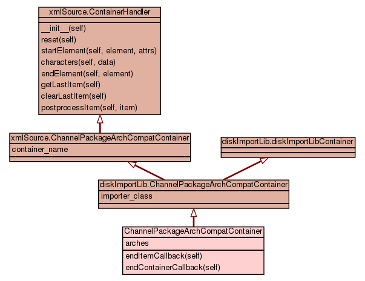

Trees
Indices
Help
Package satellite_tools
::
Module syncLib
:: Class FileManip
[
hide private
]
[
frames
] |
no frames
]
Class FileManip
source code

Generic file manipulation class
Instance Methods
[
hide private
]
__init__
(
self
,
relative_path
,
timestamp
,
file_size
)
source code
write_file
(
self
,
stream_in
)
Writes the contents of stream_in to the filesystem Returns the file size(success) or raises FileCreationError
source code
Trees
Indices
Help
Generated by Epydoc 3.0.1 on Fri Jan 22 11:36:34 2010
http://epydoc.sourceforge.net